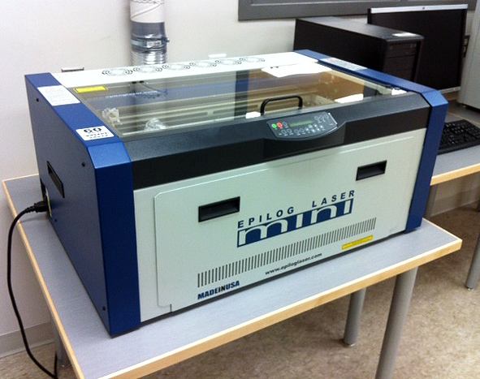

Laser Cutter
laser cutter Laser cutting is a technology that uses a laser to cut materials, and is typically used for industrial manufacturing applications, but is also starting to be used by schools, small businesses, and hobbyists. Laser cutting works by directing the output of a high-power laser most commonly through optics. The laser optics and CNC (computer numerical control) are used to direct the material or the laser beam generated.